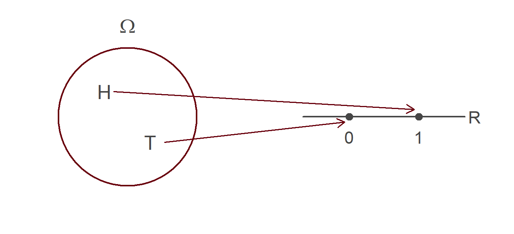
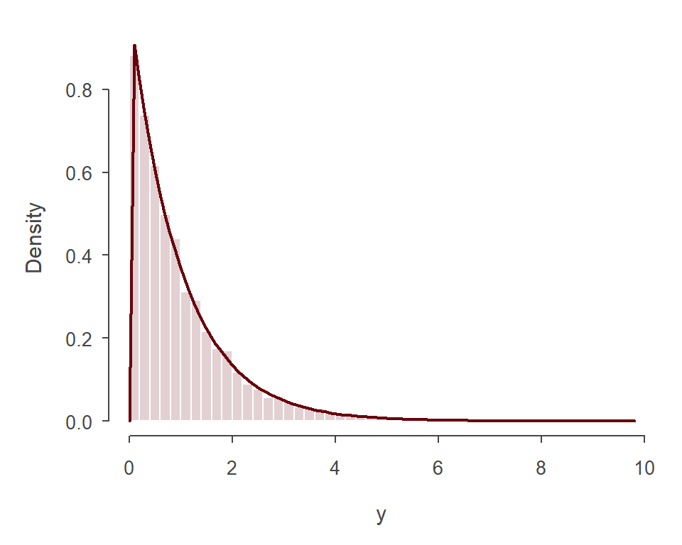
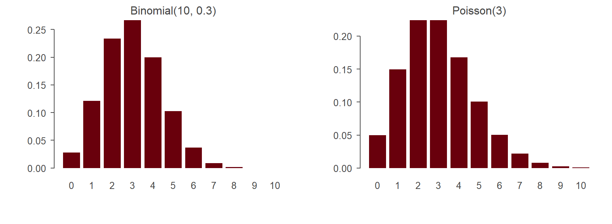

dexp(1) # densidad f(1) = e^(-1)[1] 0.3678794pexp(2) - pexp(1) # Pr(1 <= X <= 2)[1] 0.2325442qexp(c(0.5, 0.9)) # mediana y cuantil 0.9[1] 0.6931472 2.3025851Estadística y Econometría
UCH / INE
2026-09-24
En la clase anterior trabajamos con eventos: subconjuntos del espacio muestral \(\Omega\). En la práctica, casi siempre conviene representar los resultados aleatorios con números (Hansen, 2022).
Ejemplo: al lanzar una moneda, en vez de hablar de \(\{H\}\) y \(\{T\}\) definimos
\[X = \begin{cases} 1 & \text{si sale cara} \\ 0 & \text{si sale sello} \end{cases}\]
\(X\) es aleatoria porque su valor depende del resultado del lanzamiento.
Lo mismo hacemos con datos económicos: el ingreso de un hogar, los años de educación de una persona o si una persona está desempleada (\(1\)) o no (\(0\)) son variables aleatorias antes de observarlas.
Definición: Variable aleatoria
Una variable aleatoria es una función que asigna un número real a cada resultado del experimento: \[X: \Omega \longrightarrow \mathbb{R}\] (DeGroot & Schervish, 2012; Hansen, 2022)
Si el resultado es un vector de números (por ejemplo, salario y experiencia de una misma persona) hablamos de un vector aleatorio.
Notación
Así, \(\Pr(X = x)\) se lee “la probabilidad de que la variable \(X\) tome el valor \(x\)”.

Cada resultado de \(\Omega\) se envía a un punto de la recta real. La probabilidad “viaja” con la función: \(\Pr(X = 1) = \Pr(\{H\})\) (Hansen, 2022).
Definición: Variable aleatoria discreta
\(X\) es discreta si existe un conjunto finito o infinito numerable \(\mathcal{X}\) tal que \(\Pr(X \in \mathcal{X}) = 1\). El menor conjunto con esta propiedad es el soporte de \(X\): los valores que ocurren con probabilidad positiva (Hansen, 2022).
Definición: Función de masa de probabilidad (PMF)
\[\pi(x) = \Pr(X = x)\] Asigna a cada valor posible su probabilidad. Cumple \(\pi(x) \geq 0\) y \(\sum_{x \in \mathcal{X}} \pi(x) = 1\) (DeGroot & Schervish, 2012; Hansen, 2022).
Moneda con probabilidad \(p\) de cara. Soporte \(\{0, 1\}\), con \(\pi(0) = 1 - p\) y \(\pi(1) = p\).
Dado justo. Soporte \(\{1, \ldots, 6\}\), con \(\pi(j) = 1/6\) para cada \(j\).
Un soporte infinito numerable. Soporte \(\{0, 1, 2, \ldots\}\) con \[\pi(k) = \frac{e^{-1}}{k!}, \qquad k = 0, 1, 2, \ldots\]
Es una función de masa válida porque \(\sum_{k=0}^{\infty} 1/k! = e\). Es un caso particular de la distribución de Poisson, que veremos más adelante (Hansen, 2022).
Años de educación (asalariados de EE.UU., 2009). La mayor probabilidad está en 12 años (cerca de 27%, secundaria completa) y la segunda en 16 años (cerca de 23%, título universitario) (Hansen, 2022).
La altura de cada barra es la probabilidad de ese valor. dpois() evalúa la función de masa de la Poisson; en R, las funciones que empiezan con d entregan masas o densidades.
Definición: Función de distribución (CDF)
\[F(x) = \Pr(X \leq x)\] Es la probabilidad de que \(X\) tome un valor menor o igual que \(x\) (DeGroot & Schervish, 2012; Hansen, 2022).
Escribimos \(X \sim F\) para decir que “\(X\) tiene distribución \(F\)”. Cuando hay varias variables, usamos subíndices: \(F_X\), \(F_Y\).
La CDF tiene una gran ventaja: está definida para cualquier variable aleatoria, sea discreta, continua o mixta. Por eso es la forma más general de describir una distribución.
Teorema
Si \(F\) es una función de distribución, entonces (Hansen, 2022):
Las propiedades 1 y 2 vienen del Axioma 1 (las probabilidades no son negativas) y la 3 del Axioma 2. La 4 es consecuencia de haber definido \(F\) con “\(\leq\)” y no con “\(<\)”.
Para una variable discreta, la CDF es una función escalonada: es constante entre los puntos del soporte y salta en cada uno de ellos una altura igual a \(\pi(x)\).
Para cualquier intervalo \((a, b]\):
\[\Pr(a < X \leq b) = F(b) - F(a)\]
Ejemplo: salarios por hora (EE.UU., 2009). La CDF evaluada en algunos puntos es (Hansen, 2022):
| \(x\) | $10 | $20 | $30 | $40 | $50 |
|---|---|---|---|---|---|
| \(F(x)\) | 0.14 | 0.54 | 0.78 | 0.89 | 0.94 |
Definición: Variable aleatoria continua
\(X\) es continua si su función de distribución \(F(x)\) es continua (Hansen, 2022).
Ejemplo: Uniforme en \([0,1]\). \[F(x) = \begin{cases} 0 & x < 0 \\ x & 0 \leq x \leq 1 \\ 1 & x > 1 \end{cases}\]
Ejemplo: Exponencial. \[F(x) = \begin{cases} 0 & x < 0 \\ 1 - e^{-x} & x \geq 0 \end{cases}\]
Ambas son continuas, parten en 0 y llegan a 1: cumplen las propiedades de una CDF.
Si \(F\) es continua, para cualquier número \(x\) (Hansen, 2022):
\[\Pr(X = x) = \lim_{\epsilon \to 0} \Pr(x \leq X \leq x + \epsilon) = \lim_{\epsilon \to 0} \left[F(x + \epsilon) - F(x)\right] = 0\]
Esto conecta con lo que vimos la clase pasada: probabilidad cero no significa imposible. Cada valor tiene probabilidad cero, pero la probabilidad de que \(X\) tome algún valor es uno.
Una consecuencia práctica: para variables continuas da lo mismo usar desigualdades estrictas o no,
\[\Pr(a < X < b) = \Pr(a \leq X \leq b) = F(b) - F(a)\]
Las variables continuas no tienen función de masa. Su análogo es la derivada de la CDF.
Definición: Función de densidad (PDF)
Cuando \(F(x)\) es diferenciable, su densidad es \[f(x) = \frac{d}{dx} F(x)\] (DeGroot & Schervish, 2012; Hansen, 2022)
Una función \(f\) es una densidad si y solo si \(f(x) \geq 0\) para todo \(x\) y \(\int_{-\infty}^{\infty} f(x)\,dx = 1\). Por el teorema fundamental del cálculo,
\[\Pr(a \leq X \leq b) = \int_a^b f(x)\,dx\]
Las áreas bajo la densidad son probabilidades.
Cuidado
\(f(x)\) no es una probabilidad. Puede ser mayor que 1 (por ejemplo, la uniforme en \([0, 0.5]\) tiene \(f(x) = 2\)). Lo que es una probabilidad es el área bajo \(f\) en un intervalo.
Ejemplo: salarios por hora (Hansen, 2022):
Uniforme en \([0,1]\). Derivando \(F(x) = x\): \[f(x) = 1 \quad \text{para } 0 \leq x \leq 1, \qquad 0 \text{ en otro caso}\]
Exponencial. Derivando \(F(x) = 1 - e^{-x}\): \[f(x) = e^{-x} \quad \text{para } x \geq 0\]
Con ella podemos calcular, por ejemplo: \[\Pr(1 \leq X \leq 2) = \int_1^2 e^{-x}\,dx = e^{-1} - e^{-2} \approx 0.233\]
Definición: Cuantil
Para una distribución continua, el cuantil \(q(\alpha)\) es el valor que deja una probabilidad \(\alpha\) a su izquierda: \[F(q(\alpha)) = \alpha \qquad \Longleftrightarrow \qquad q(\alpha) = F^{-1}(\alpha)\] (Hansen, 2022)
Ejemplo: salarios por hora. Los cuartiles son $12.82, $18.88 y $28.35: la mitad de los asalariados gana $18.88 o menos por hora (Hansen, 2022).
d, p, q y rR usa el mismo prefijo para cada distribución: d (densidad o masa), p (CDF), q (cuantil) y r (simulación).
[1] 0.3678794[1] 0.2325442[1] 0.6931472 2.3025851Los cuantiles coinciden con la fórmula analítica \(q(\alpha) = -\log(1 - \alpha)\): la mediana es \(\approx 0.69\) y el cuantil 0.9 es \(\approx 2.30\) (Hansen, 2022).
Si \(X\) es una variable aleatoria y \(Y = g(X)\), entonces \(Y\) también es una variable aleatoria (DeGroot & Schervish, 2012; Hansen, 2022).
Caso discreto. Los puntos del soporte se mueven y las probabilidades se conservan. Si dos puntos van al mismo valor, sus probabilidades se suman.
Ejemplo: \(X\) con soporte \(\{-1, 0, 1\}\) e \(Y = X^2\). Como \(-1\) y \(1\) van a \(1\): \[\Pr(Y = 0) = \Pr(X = 0), \qquad \Pr(Y = 1) = \Pr(X = -1) + \Pr(X = 1)\]
Esto importa en economía porque trabajamos todo el tiempo con transformaciones: logaritmo del ingreso, ingreso al cuadrado, indicadores de pobreza, etc.
Teorema
Si \(X\) tiene densidad \(f_X\) y \(g\) es estrictamente monótona con inversa \(g^{-1}\) diferenciable, entonces \(Y = g(X)\) tiene densidad \[f_Y(y) = f_X\big(g^{-1}(y)\big)\left|\frac{d}{dy} g^{-1}(y)\right|\] (Hansen, 2022)
El término \(\left|\frac{d}{dy} g^{-1}(y)\right|\) es el jacobiano: corrige por cuánto “estira” o “comprime” la transformación cada tramo de la recta.
Ejemplo: log salarios. Si \(Y = \log X\), entonces \(f_Y(y) = f_X(e^y)\,e^y\). La densidad de los log salarios es mucho más simétrica que la de los salarios en niveles (Hansen, 2022). Es una de las razones por las que en econometría solemos modelar \(\log(\text{salario})\).
Un resultado útil: si \(U \sim U[0,1]\), entonces \(Y = -\log U\) tiene distribución exponencial (Hansen, 2022). Comprobémoslo simulando:

El histograma de los valores simulados coincide con la densidad exponencial teórica (línea roja).
Definición: Esperanza
Para una variable discreta con soporte \(\{\tau_j\}\) y masas \(\pi_j\), la esperanza (o valor esperado) de \(X\) es \[\mathbb{E}[X] = \sum_{j} \tau_j \, \pi_j\] si la serie converge (Hansen, 2022).
Es un promedio ponderado de los valores posibles, donde las ponderaciones son las probabilidades.
Important
Aunque \(X\) es aleatoria, \(\mathbb{E}[X]\) no lo es: es un número fijo, una característica de la distribución (Hansen, 2022).
Bernoulli. \(\mathbb{E}[X] = 1 \cdot p + 0 \cdot (1-p) = p\)
Dado justo. \(\mathbb{E}[X] = \frac{1}{6}(1 + 2 + 3 + 4 + 5 + 6) = 3.5\)
Nótese que 3.5 no es un valor que el dado pueda tomar: la esperanza no tiene por qué pertenecer al soporte.
Años de educación (EE.UU., 2009): \(\mathbb{E}[X] \approx 14\) años (Hansen, 2022).
Interpretación física: la esperanza es el centro de masa de la distribución. Si pusiéramos las probabilidades como pesos sobre una tabla, la tabla quedaría en equilibrio al apoyarla en \(\mathbb{E}[X]\) (Hansen, 2022).
Definición
Si \(X\) tiene densidad \(f(x)\), \[\mathbb{E}[X] = \int_{-\infty}^{\infty} x\, f(x)\,dx\] cuando la integral converge (Hansen, 2022).
Salarios por hora: \(\mathbb{E}[X] = \$23.92\), mientras que la mediana es $18.88 (Hansen, 2022).
Tip
En distribuciones con sesgo a la derecha, como los ingresos, la media queda por encima de la mediana: los salarios muy altos “tiran” el promedio hacia arriba. Por eso muchas estadísticas oficiales de ingresos reportan la mediana.
La esperanza de una función \(g(X)\) se calcula con la distribución de \(X\) (Hansen, 2022):
\[\mathbb{E}[g(X)] = \sum_j g(\tau_j)\,\pi_j \qquad \text{o} \qquad \mathbb{E}[g(X)] = \int_{-\infty}^{\infty} g(x)\,f(x)\,dx\]
Teorema: Linealidad de la esperanza
Para constantes \(a\) y \(b\): \[\mathbb{E}[a + bX] = a + b\,\mathbb{E}[X]\] (Hansen, 2022)
Ejemplo: si \(X \sim U[0,1]\), entonces \(\mathbb{E}[X^2] = \int_0^1 x^2\,dx = 1/3\). Observe que \(\mathbb{E}[X^2] = 1/3 \neq (\mathbb{E}[X])^2 = 1/4\): la linealidad no se extiende a funciones no lineales.
Para funciones no lineales no podemos “meter la esperanza adentro”, pero sí sabemos hacia dónde va el error si la función es convexa o cóncava.
Teorema: Desigualdad de Jensen
Si \(g\) es convexa: \(\quad g(\mathbb{E}[X]) \leq \mathbb{E}[g(X)]\)
Si \(g\) es cóncava: \(\quad \mathbb{E}[g(X)] \leq g(\mathbb{E}[X])\)
Ejemplo con salarios. Como el logaritmo es cóncavo, \(\mathbb{E}[\log X] \leq \log \mathbb{E}[X]\). En los datos: \(\mathbb{E}[\log(\text{salario})] = 2.95\), mientras que \(\log(23.92) \approx 3.17\) (Hansen, 2022).
La misma lógica explica la aversión al riesgo: con utilidad cóncava, la utilidad esperada de una lotería es menor que la utilidad de su valor esperado.
No necesariamente. La paradoja de San Petersburgo (Hansen, 2022): se lanza una moneda hasta que sale cara. Si sale en el lanzamiento \(k\), el pago es \(X = 2^k\), con \(\Pr(X = 2^k) = 2^{-k}\).
\[\mathbb{E}[X] = \sum_{k=1}^{\infty} 2^k \cdot 2^{-k} = \sum_{k=1}^{\infty} 1 = \infty\]
A pesar de que la esperanza es infinita, casi nadie pagaría mucho por jugar. La “paradoja” desaparece al introducir una utilidad cóncava.
En distribuciones continuas pasa lo mismo: la densidad \(f(x) = x^{-2}\) para \(x > 1\) (un caso de la Pareto) tiene esperanza infinita, y la distribución de Cauchy no tiene esperanza definida (Hansen, 2022).
Definición
La varianza de \(X\) es \[\sigma^2 = \text{var}(X) = \mathbb{E}\left[(X - \mathbb{E}[X])^2\right]\] y la desviación estándar es \(\sigma = \sqrt{\sigma^2}\) (Hansen, 2022).
Dos resultados útiles
\[\text{var}(X) = \mathbb{E}[X^2] - (\mathbb{E}[X])^2 \qquad\qquad \text{var}(a + bX) = b^2\,\text{var}(X)\] (Hansen, 2022)
La segunda implica que sumar una constante no cambia la varianza.
Bernoulli. \(\mathbb{E}[X^2] = p\), así que \[\text{var}(X) = p - p^2 = p(1-p)\]
La varianza es máxima cuando \(p = 1/2\): el caso más incierto.
Uniforme en \([0,1]\). \(\text{var}(X) = \mathbb{E}[X^2] - (\mathbb{E}[X])^2 = 1/3 - 1/4 = 1/12\)
Datos de EE.UU., 2009 (Hansen, 2022):
| Media | Varianza | Desv. estándar | |
|---|---|---|---|
| Salario por hora | $24 | 429 | $20.7 |
| Años de educación | 13.9 | 7.5 | 2.7 |
Definición
Definición: Distribución paramétrica
Una distribución paramétrica \(F(x \mid \theta)\) es una familia de distribuciones indexada por un parámetro \(\theta \in \Theta\). Para cada valor de \(\theta\) obtenemos una distribución distinta (Hansen, 2022).
Los economistas las usan para construir modelos teóricos; los econometristas, para modelos estadísticos: suponemos que los datos vienen de una familia, pero no conocemos \(\theta\) y lo estimamos a partir de los datos (Hansen, 2022).
Esta es la idea que organizará toda la unidad de estimación. Por ahora basta conocer algunas familias y entender cómo cambian con sus parámetros. No es necesario memorizarlas: se consultan cuando se necesitan (Hansen, 2022).
Bernoulli\((p)\): una variable con dos resultados, \(\Pr(X = 1) = p\). Modela, por ejemplo, si una persona está desempleada o no.
Binomial\((n, p)\): número de “éxitos” en \(n\) ensayos Bernoulli independientes. \[\pi(x) = \binom{n}{x} p^x (1-p)^{n-x}, \qquad x = 0, 1, \ldots, n\]
Aquí reaparece el coeficiente binomial de la clase pasada.
Poisson\((\lambda)\): conteos sin un máximo natural. \[\pi(x) = \frac{e^{-\lambda}\lambda^x}{x!}, \qquad x = 0, 1, 2, \ldots\]
En econometría se usa para datos de conteo (número de visitas al médico, de patentes, de hijos). Un solo parámetro \(\lambda\) determina a la vez la media y la varianza (DeGroot & Schervish, 2012; Hansen, 2022).
Uniforme \(U[a, b]\): todos los valores del intervalo son igualmente verosímiles. \[f(x) = \frac{1}{b - a}, \qquad a \leq x \leq b\]
Exponencial\((\lambda)\): duraciones y tiempos de espera. \[f(x) = \frac{1}{\lambda} e^{-x/\lambda}, \qquad x \geq 0\]
Es muy usada en modelos teóricos por su simplicidad, pero poco en econometría aplicada (Hansen, 2022).
Normal \(N(\mu, \sigma^2)\): la distribución más usada en econometría. \[f(x) = \frac{1}{\sqrt{2\pi\sigma^2}} \exp\left(-\frac{(x - \mu)^2}{2\sigma^2}\right)\]
| Distribución | Soporte | \(\mathbb{E}[X]\) | \(\text{var}(X)\) |
|---|---|---|---|
| Bernoulli\((p)\) | \(\{0, 1\}\) | \(p\) | \(p(1-p)\) |
| Binomial\((n, p)\) | \(\{0, \ldots, n\}\) | \(np\) | \(np(1-p)\) |
| Poisson\((\lambda)\) | \(\{0, 1, 2, \ldots\}\) | \(\lambda\) | \(\lambda\) |
| Uniforme \(U[a,b]\) | \([a, b]\) | \((a+b)/2\) | \((b-a)^2/12\) |
| Exponencial\((\lambda)\) | \([0, \infty)\) | \(\lambda\) | \(\lambda^2\) |
| Normal \(N(\mu, \sigma^2)\) | \(\mathbb{R}\) | \(\mu\) | \(\sigma^2\) |
(DeGroot & Schervish, 2012; Hansen, 2022)
Note
Ojo con la parametrización de la exponencial: aquí \(\lambda\) es la media (como en Hansen). Otros textos, y la función dexp() de R, usan la tasa \(1/\lambda\).

Cuando \(\mu = 0\) y \(\sigma^2 = 1\) hablamos de la normal estándar. Su densidad se denota \(\phi(x)\) y su CDF \(\Phi(x)\) (Hansen, 2022).
Estandarización. Si \(X \sim N(\mu, \sigma^2)\), entonces \[Z = \frac{X - \mu}{\sigma} \sim N(0, 1)\]
\(\mu\) es un parámetro de ubicación y \(\sigma\) de escala: cambiar \(\mu\) desplaza la campana y cambiar \(\sigma\) la ensancha o la angosta.
Una relación que usaremos más adelante: si \(Z \sim N(0,1)\), entonces \(Z^2\) tiene distribución chi-cuadrado con 1 grado de libertad, \(\chi^2_1\). Se obtiene aplicando la regla de transformaciones a \(g(x) = x^2\) (Hansen, 2022). Junto con la \(t\) y la \(F\), la retomaremos al hacer inferencia.
[1] 0.6826895[1] 0.9544997[1] 0.9973002[1] 1.959964Cerca de 68% de la probabilidad está a menos de una desviación estándar de la media, 95% a menos de dos y 99.7% a menos de tres. El cuantil 0.975, \(\approx 1.96\), aparecerá una y otra vez cuando construyamos intervalos de confianza.
En economía casi siempre nos interesa la relación entre variables: salario y educación, consumo e ingreso, precio y cantidad.
Definición
Un par de variables aleatorias bivariadas \((X, Y)\) es una función de \(\Omega\) en \(\mathbb{R}^2\). Su función de distribución conjunta es \[F(x, y) = \Pr(X \leq x,\; Y \leq y)\] (DeGroot & Schervish, 2012; Hansen, 2022)
En el caso discreto trabajamos con la función de masa conjunta \(\pi(x, y) = \Pr(X = x, Y = y)\); en el continuo, con la densidad conjunta \(f(x, y)\), y las probabilidades son volúmenes bajo esa superficie.
Una pizzería atiende estudiantes. Cada cliente compra una o dos porciones (\(X\)) y una o dos bebidas (\(Y\)). La función de masa conjunta es (Hansen, 2022):
| \(Y = 1\) | \(Y = 2\) | \(\Pr(X = x)\) | |
|---|---|---|---|
| \(X = 1\) | 0.4 | 0.1 | 0.5 |
| \(X = 2\) | 0.2 | 0.3 | 0.5 |
| \(\Pr(Y = y)\) | 0.6 | 0.4 | 1 |
Las cuatro probabilidades del centro son no negativas y suman uno: es una función de masa válida. La última fila y la última columna son las distribuciones marginales.
Definición
La distribución marginal de \(X\) es la distribución de \(X\) sola. Se obtiene “sumando” o “integrando” la otra variable (Hansen, 2022): \[\pi_X(x) = \sum_y \pi(x, y) \qquad\qquad f_X(x) = \int_{-\infty}^{\infty} f(x, y)\,dy\]
En la pizzería:
Es la misma idea de la ley de probabilidad total de la clase pasada. La conjunta determina las marginales, pero las marginales no determinan la conjunta.
Definición
La distribución condicional de \(Y\) dado \(X = x\) es la distribución de \(Y\) en la subpoblación con \(X = x\) (Hansen, 2022): \[\pi_{Y|X}(y \mid x) = \frac{\pi(x, y)}{\pi_X(x)} \qquad\qquad f_{Y|X}(y \mid x) = \frac{f(x, y)}{f_X(x)}\]
Ejemplo: salarios según educación (EE.UU., 2009). Al comparar la distribución de salarios de quienes tienen 12, 16, 18 y 20 años de educación (Hansen, 2022):
Definición
\(X\) e \(Y\) son independientes, \(X \perp\!\!\!\perp Y\), si para todo \((x, y)\) \[F(x, y) = F_X(x)\,F_Y(y)\] Equivalentemente, \(\pi(x, y) = \pi_X(x)\,\pi_Y(y)\) o \(f(x, y) = f_X(x)\,f_Y(y)\) (Hansen, 2022).
Es la definición de independencia de eventos de la clase pasada, aplicada a todos los eventos \(\{X \leq x\}\) y \(\{Y \leq y\}\). Si son independientes, la condicional es igual a la marginal: \(f_{Y|X}(y \mid x) = f_Y(y)\).
En la pizzería: \(\Pr(X = 1, Y = 1) = 0.4\), pero \(\Pr(X = 1)\Pr(Y = 1) = 0.5 \times 0.6 = 0.3\). Porciones y bebidas son dependientes (Hansen, 2022).
Definición
\[\text{cov}(X, Y) = \mathbb{E}\big[(X - \mathbb{E}[X])(Y - \mathbb{E}[Y])\big] = \mathbb{E}[XY] - \mathbb{E}[X]\,\mathbb{E}[Y]\] \[\text{corr}(X, Y) = \frac{\text{cov}(X, Y)}{\sqrt{\text{var}(X)\,\text{var}(Y)}}\] (Hansen, 2022)
En la pizzería: \(\mathbb{E}[XY] = 2.2\), \(\mathbb{E}[X] = 1.5\) y \(\mathbb{E}[Y] = 1.4\), así que \(\text{cov}(X, Y) = 2.2 - 2.1 = 0.1\) y \(\text{corr}(X, Y) \approx 0.41\).
Teorema
Si \(X\) e \(Y\) son independientes (con varianzas finitas), entonces no están correlacionadas. Lo contrario no es cierto (Hansen, 2022).
Contraejemplo: sea \(X \sim U[-1, 1]\) e \(Y = X^2\). Como la distribución de \(X\) es simétrica en torno a cero, \(\mathbb{E}[X] = 0\) y \(\mathbb{E}[X^3] = 0\), así que \[\text{cov}(X, Y) = \mathbb{E}[X^3] - \mathbb{E}[X]\,\mathbb{E}[X^2] = 0\]
Sin embargo, \(Y\) está completamente determinada por \(X\). La covarianza solo capta relaciones lineales; una relación en forma de U puede tener covarianza cero.
Definición
La esperanza condicional de \(Y\) dado \(X = x\) es la esperanza de la distribución condicional: \[m(x) = \mathbb{E}[Y \mid X = x] = \sum_y y\,\pi_{Y|X}(y \mid x) \qquad \text{o} \qquad \int y\, f_{Y|X}(y \mid x)\,dy\] (Hansen, 2022)
Es el valor promedio de \(Y\) en la subpoblación con \(X = x\).
En la pizzería: \(\mathbb{E}[Y \mid X = 1] = 1.2\) y \(\mathbb{E}[Y \mid X = 2] = 1.6\). Quienes compran dos porciones compran, en promedio, más bebidas.
Salario promedio por hora según años de educación (EE.UU., 2009) (Hansen, 2022):
| Educación | 8 | 12 | 14 | 16 | 18 | 20 |
|---|---|---|---|---|---|---|
| \(\mathbb{E}[\text{salario} \mid \text{educ}]\) | $11.75 | $17.61 | $21.49 | $30.12 | $35.16 | $51.76 |
La función \(m(x) = \mathbb{E}[Y \mid X = x]\) es el objeto central de la econometría: la regresión busca justamente describir cómo cambia el promedio de \(Y\) con \(X\).
Ejemplo: salario según experiencia. El salario esperado es cerca de $16.50 sin experiencia, sube casi linealmente hasta unos $26 a los 20 años y luego baja a unos $21 a los 50 años: un perfil en forma de U invertida (Hansen, 2022). Por eso, más adelante incluiremos la experiencia al cuadrado en las regresiones de salarios.
Warning
Igual que en la clase pasada: \(\mathbb{E}[\text{salario} \mid \text{educ}]\) describe cómo difiere el salario promedio entre grupos con distinta educación. No dice cuánto aumentaría el salario de una persona si estudiara un año más. Esa es una pregunta causal.
\(m(x)\) es un número para cada \(x\). Pero si la evaluamos en la variable aleatoria \(X\), obtenemos \(\mathbb{E}[Y \mid X]\), que es una variable aleatoria (una transformación de \(X\)) (Hansen, 2022).
Teorema: Ley de esperanzas iteradas
Si \(\mathbb{E}|Y| < \infty\), entonces \[\mathbb{E}\big[\mathbb{E}[Y \mid X]\big] = \mathbb{E}[Y]\] (Hansen, 2022)
En palabras: el promedio de los promedios por grupo es el promedio total.
En la pizzería: \[\mathbb{E}[Y] = 0.5 \times 1.2 + 0.5 \times 1.6 = 1.4 \qquad \checkmark\]
La varianza condicional \(\text{var}(Y \mid X = x)\) es la varianza de \(Y\) en la subpoblación con \(X = x\) (Hansen, 2022).
Teorema: Descomposición de la varianza
\[\text{var}(Y) = \underbrace{\mathbb{E}\big[\text{var}(Y \mid X)\big]}_{\text{dentro de los grupos}} + \underbrace{\text{var}\big(\mathbb{E}[Y \mid X]\big)}_{\text{entre grupos}}\] (Hansen, 2022)
Salarios según educación: la varianza del salario es 150 para quienes tienen secundaria completa, 573 para universitarios y 1646 para quienes tienen posgrado profesional o doctorado. Con más educación sube el salario promedio, pero también su dispersión (Hansen, 2022). Cuando la varianza condicional cambia con \(X\) hablamos de heterocedasticidad, un concepto clave en la unidad de regresión.
X [,1]
1 1.2
2 1.6[1] 1.4 cov corr
0.1000000 0.4082483 Los resultados coinciden con los cálculos a mano: \(\text{cov}(X, Y) = 0.1\) y \(\text{corr}(X, Y) \approx 0.41\).
Conceptos clave:
Próxima clase:
Lecturas sugeridas

Estadística y Econometría — Clase 02